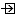

CP 4
Direct link toward element page
Titles referencing the Element
- ComponentPort - CP 4

ComponentPort - CP 4- ComponentPort - CP 4
- ComponentPort - CP 4
- ComponentPort - CP 4
- ComponentPort - CP 4
Lists referencing the Element
- LogicalComponent - CENSSAT Spacecraft
 LogicalComponent - State Management
LogicalComponent - State Management- LogicalComponent - Safety Management
- Part - CENSSAT Spacecraft : CENSSAT Spacecraft
- Part - State Management : State Management
- Part - Detumble Management : Detumble Management
- LogicalComponent - GNC Management
- Part - Safety Management : Safety Management
- Part - GNC Management : GNC Management
- Part - Orchestrator : Orchestrator
- LogicalComponent - Orchestrator
- LogicalComponent - Detumble Management